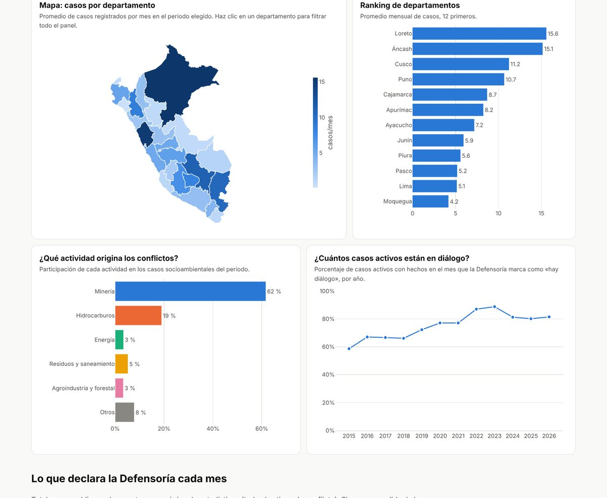

Dashboard · Defensoría del Pueblo
Conflictos socioambientales en el Perú, 2015–2026
Pregunta: ¿dónde se concentran los conflictos socioambientales, qué actividades los originan y cuántos llegan a un proceso de diálogo?
Convertí 141 reportes mensuales de la Defensoría del Pueblo en una base de 28 166 filas, validada contra los totales oficiales (diferencia mediana: 0 casos).
62 % de los conflictos socioambientales está ligado a la minería, y por cada caso resuelto aparecen dos o tres nuevos (597 nuevos frente a 242 resueltos).
Python · pandas · extracción de PDF · Plotly · GitHub Pages